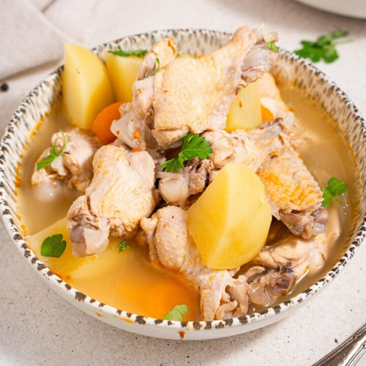

Chicken Souse

Description
This traditional Bahamian dish is served with a side of grits and
bread or Johnny cake. Add lime and hot pepper to spice it up to
your individual taste. It's delicious and surprisingly simple!
Ingredients
- 24 chicken wings, separated
- 3 tablespoons lime juice
- 1 teaspoon seasoned salt
- 1 teaspoon vegetable oil
- 1 large onion, diced
- ½ green pepper, diced
- 6 large potatoes, peeled and diced
- 3 carrots, diced
- ½ teaspoon crushed red pepper flakes
- 1 tablespoon ground allspice
- 2 bay leaves
- ¾ cup lime juice
- 3 cups water
- salt and black pepper to taste
Steps
-
Toss the chicken wings with 3 tablespoons lime juice and
the seasoned salt. Set aside to marinate at room temperature
for 1 hour.
-
Heat the vegetable oil in a large pot over medium heat.
Add the onion and green pepper; cook and stir until the onion
has softened and begun to brown, about 10 minutes. Add the
potatoes, carrots, red pepper flakes, allspice, bay leaves,
marinated chicken, lime juice, and water. Bring to a simmer,
then reduce heat to medium-low, cover, and continue simmering
until the chicken is no longer pink at the bone, and the
vegetables are tender, about 40 minutes. Season to taste with
salt and pepper before serving.